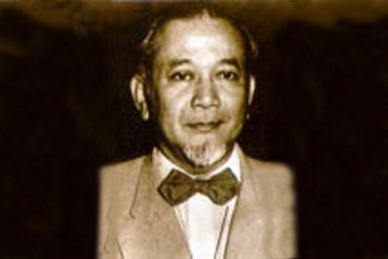

Suatu hari di awal 1946, Ahmad Subardjo menerima undangan untuk menghadiri Kongres Partai Buruh di Blitar. Dia lantas pergi bersama Sukiman Wirjosandjojo, Iwa Kusuma Sumantri, dan Ki Hajar Dewantara. Keempatnya pergi mengendarai mobil dari Yogyakarta pada sore hari dan tiba di Blitar pada tengah malam. Kala itu, empat tokoh pergerakan kemerdekaan, yang tiga di antaranya masuk jajaran kabinet presidensial, tersebut sudah tidak aktif di kursi pemerintahan Republik. Ahmad Subardjo, misalnya, sejak November 1945 telah meletakkan jabatannya sebagai menteri luar negeri. Begitu pula Iwa Kusuma Sumantri dan Ki Hajar Dewantara, sebagai menteri sosial dan menteri pengajaran, tidak lagi terlibat di kabinet baru pimpinan Sutan Sjahrir. Lantas dalam kapasitas apa mereka hadir di Kongres Partai Buruh di Blitar?
Achmad Soebardjo Menteri Luar Negeri Pertama
Diceritakan Ahmad Subardjo dalam otobiografinya Kesadaran Nasional: Sebuah Otobiografi, selepas meninggalkan jabatan menteri, mereka kembali bertemu di Yogyakarta. Pada sebuah kesempatan, Subardjo diperkenalkan oleh Sukiman kepada Jenderal Sudirman. Ketika itu Sudirman tengah membentuk Badan Penasehat Politik, yang salah satu tugasnya memberi analisa tentang situasi politik khusus menghadapi Belanda. Sukiman lalu merekomendasikan Subardjo dan Iwa karena keduanya pernah belajar di Belanda. Sementara dirinya dan Ki Hajar Dewantara telah lebih dahulu menerima jabatan tersebut. Maka Badan Penasehat Politik Jenderal Sudirman resmi diisi oleh empat tokoh itu. poster Di dalam kongres, anggota Partai Buruh membicarakan tentang keikutsertaan mereka dalam perjuangan kemerdekaan. Partai Buruh berusaha memberikan sumbangan moril dan tenaga-usaha dalam menghadapi Belanda yang hendak mengupayakan kembali penjajahan di Republik Indonesia. Badan Penasehat Politik Jenderal Sudirman hadir untuk memberikan masukan-masukan. Di akhir kongres, beberapa resolusi diambil dan disepakati oleh seluruh anggota kongres.
Setelah kongres berakhir, Subardjo dan lainnya kembali ke Yogyakarta. Di Madiun, rombongan berhenti sebentar untuk menemui Residen Madiun Susanto Tirtoprodjo. Dahulu dia bersekolah di Belanda dan menjadi anggota Perhimpunan Indonesia. Subardjo dan Susanto dahulu berkawan cukup baik. Di sana rombongan menumpang istirahat, sambil sedikit berbincang tentang situasi di tanah air.
Dari Madiun perjalanan pulang dilanjutkan melalui Solo. Di kota itu juga Subardjo hendak menemui kawan baiknya, Sosrokartono. Dia seorang wartawan dan nasionalis sejati. Hobinya, imbuh Subardjo, mengumpulkan data-data, berita-berita dan bahan-bahan untuk perjuangan kemerdekaan, berdasarkan informasi yang dia dapat dari seluruh jaringannya di pulau Jawa. “Dr. Kartono ialah nasionalis sejati, tidak berpartai, sehingga mempunyai pendirian yang bebas dari pro atau kontra terhadap sesuatu ideologi. Dia hanya mementingkan keselamatan negara dari penjajahan kembali Belanda,” kata Subardjo.
Karena ingin bertukar pikiran dengan kawannya itu, Subardjo izin meninggalkan rombongan. Dia berpisah di Solo bersama Mangkudimulyo dan berangkat menggunakan mobil ke kediaman Kartono. Sementara Sukiman, Iwa, dan Ki Hajar meneruskan perjalanan dengan mobil lain ke Yogyakarta. Sesampainya di tujuan, Subardjo langsung disambut Kartono. “Ini suatu rahmat Tuhan, bahwa saudara mampir di rumah kami, justru karena saudara berada dalam keadaan bahaya”. Subardjo tidak mengerti dengan maksud kawannya itu.
“Saya mendapat informasi bahwa organisasi Pesindo (Pemuda Sosialis Indonesia) yang didirikan Sutan Sjahrir dan mendukung politiknya, sudah mengetahui bahwa saudara pergi ke Blitar dan mereka mempunyai rencana untuk mencegat saudara di Klaten di tempat mereka bermarkas. Rencananya ialah untuk menculik saudara dan membunuhnya di suatu tempat,” ujar Kartono. “Jadi janganlah meneruskan perjalanan pulang ke Yogyakarta untuk menghindari penculikan saudara. Tinggal saja dulu di rumah kali, sampai kami mendapat kabar dari pembantu-pembantu saya bahwa Klaten menjadi all clear,” lanjutnya.
“Terima kasih atas info itu,” kata Subardjo. “Kebetulan saya mempunyai famili yang menjabat administrator perusahaan gula di Tasikmadu, luar kota Solo. Saya akan berdiam di sana buat beberapa hari, sehingga saya tidak usah mengganggu saudara dengan menginap di tempat saudara.” Setelah selesai dengan urusannya di kediaman Kartono, Subardjo kemudian melanjutkan perjalanan ke Tasikmadu di Karanganyar. Di sana Subardjo bersembunyi selama lebih kurang sepuluh hari. Sedangkan Mangkudimulyo langsung melanjutkan perjalanan menuju Yogyakarta. Dan benar saja, berdasar informasi Mangkudimulyo, di Klaten mobilnya ditahan oleh Pesindo.
“Mana Subardjo?” tanya pemimpin Pesindo.
“Tidak ada,” jawab Mangkudimulyo.
“Di mana dia berada?” tanyanya lagi.
“Kurang tahu, dia turun di Madiun,” terang Mangkudimulyo.
Karena jelas Subardjo tidak ada di mobil tersebut, Mangkudimulyo diperbolehkan melanjutkan perjalanan. Dia tiba di Yogyakarta dengan selamat.
“Demikianlah peristiwa Klaten itu, yang membuktikan bahwa gerak-gerik saya diperhatikan oleh golongan sosialis untuk dilenyapkan dari bumi ini. Berkat perlindungan Tuhan Yang Maha Esa saya terhindar dari pembunuhan oleh lawan politik saya,” kata Subardjo.